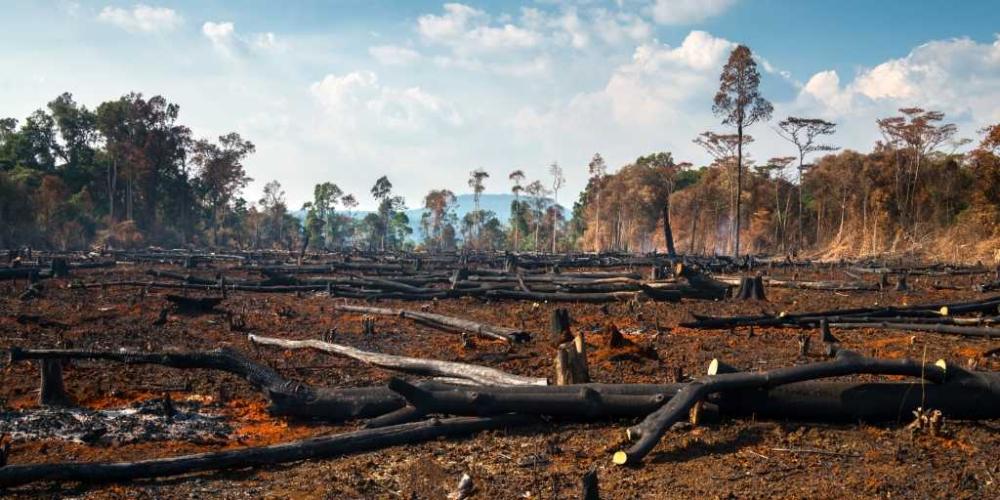
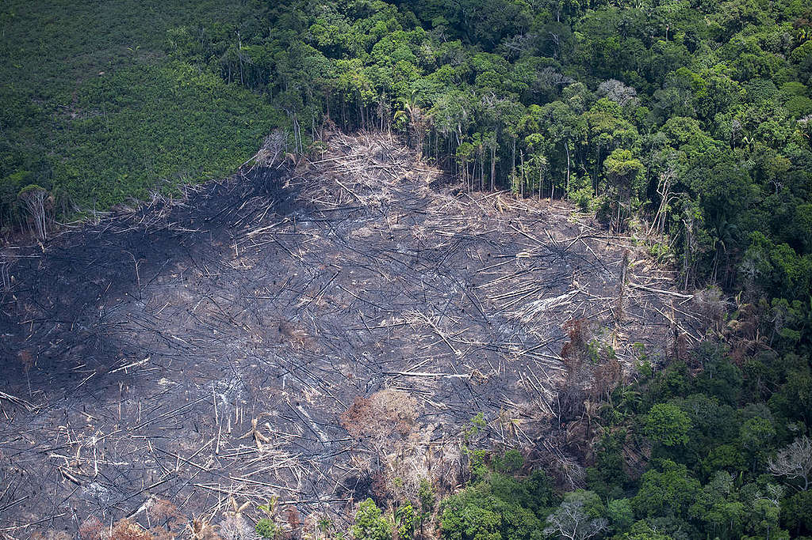
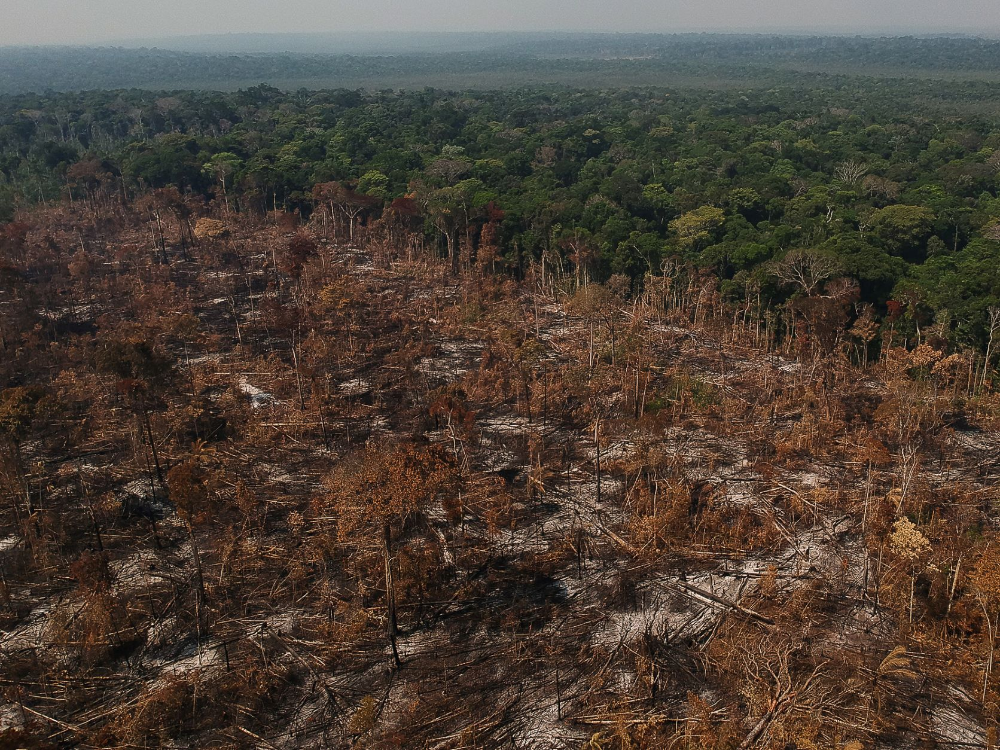

O desmatamento no Brasil cresceu 22,3% em 2022, totalizando mais de dois milhões de hectares destruídos. Isso é equivalente a 90% da área do estado de Sergipe. Só na Amazônia, cerca de 21 árvores foram derrubadas a cada segundo. O dia com maior área desmatada em 2022 foi 25 de julho, com 6.945 hectares desmatados, equivalente a 8.400 campos de futebol. O desmatamento é um problema sério para o Brasil, pois afeta o meio ambiente, a economia e a sociedade.